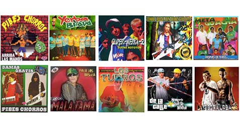

In this project we use a character network based LSTM to generate new cumbias villeras
lyrics.

We made a web scraping using python and get a dataset of 156.000 character corpus with
almost
5.000 unike words. Here the dataset.
A sample of the corpus:
...el que quiere un vino en cartón
Que levante la mano
El que quiera tomar
Que la caja de vino va a empezar a pasar
Que calor, oeo,
Que calor que tengo yo
Que levante la mano
Como yo
El que quiere un v...
Some “novels” cumbias villeras:
(lstm , dos capas, 128 + densa, RMSprop, loss='categorical_crossentropy')
"Chicas se muere la gente y se muere yo el loco que se hace"
"Todos los pibes cintura que no vas a tocar"
"Te pones es que yo se que eso es fasin"
y a los pies que te ves la cintura la mueven la colita
a te quedes la colita, re mi amor…
un faso la amor ven ponero chorros
la chupa cuanto mueve, mueve hay que feo, la cola mas de mas